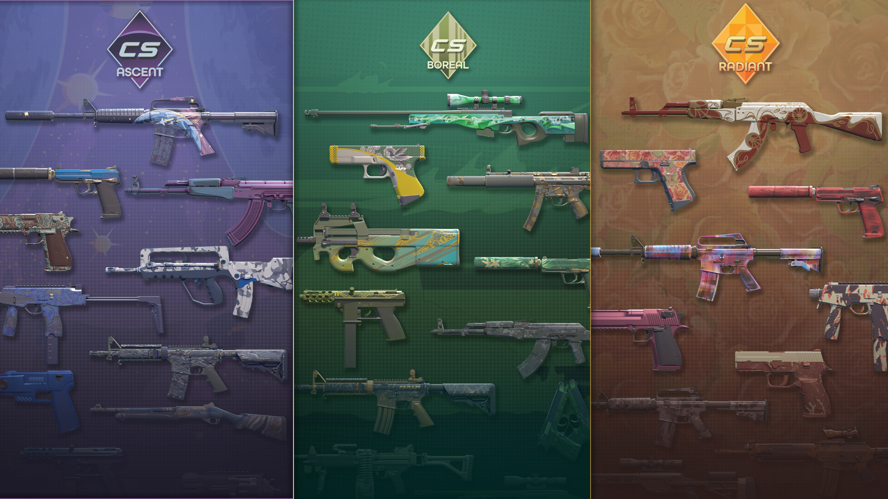
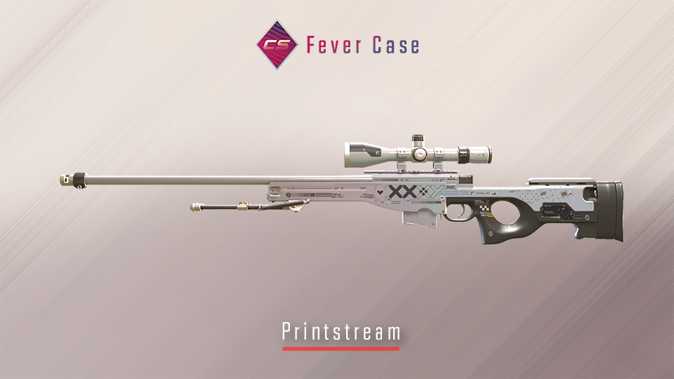
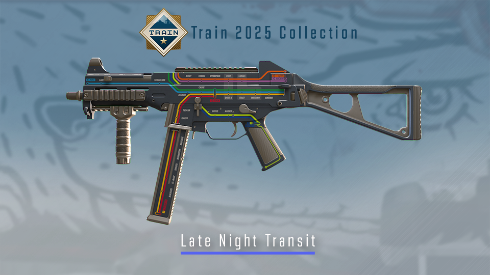
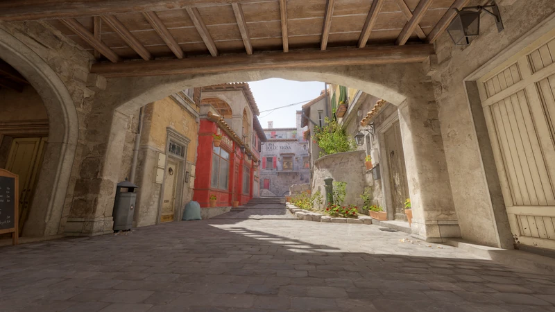
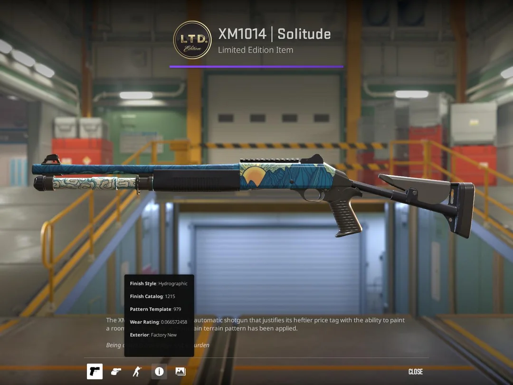

Najnowsza aktualizacja 1.04.2025 już dostępna w grze!
Będą to zmiany na plus czy też na minus dla milionów graczy?
Dropy tygodniowe
Pierwsza zmiana która została wprowadzona są to dropy tygodniowe ktróre możemy dostać poprzez wbicie jednego poziomu, takiego dropa możemy otrzymać raz w tygodniu. Możemy zdobyć skiny z kolekcji Ascent,Boreal i Radiant.
Nowa skrzynka - Fever Case
Do gry została wprowadzona nowa skrzynka Fever Case która była obiecana już od kilku miesięcy! Zawiera ona 18 nowych skinów takie jak AWP Prinstream, AK 47 Searing Rage, a także wiele nowych skinów.
Nowa kolekcja Train 2025!
Mamy także nowa kolekcja Train 2025 na która wszyscy długo wyczekiwali. Dostaliśmy między innymi AWP LongDog.
Inferno i Train wkońcu zmiany?
W najnowszej aktualizacji Inferno i Train doczekał się wkońcu zmian. Ale czy to sprawi wkońcu że te mapy staną się grywalne i gracze nie bedą narzekali na rozłożenie mapy oraz błędy?
Inferno
- Dostosowano Banana, aby bardziej odpowiadał rozmiarowi wersji CS:GO
- Uproszczone tło za rampą T
- Uproszczony widok na dół
- Uproszczone tło Bombsite B
- Usunięto stopień po bokach korytarza w Arch
- Usunięto przerwę w pikselach w Coffin
- Dostosowano skrzynie na schodach prowadzących na balkon, aby gracze mogli niezawodnie wspinać się po schodach
- Dostosowano lub usunięto rekwizyty na całej mapie
- Poprawiono kolizję gracza i granatu na całej mapie
Train

- Naprawiono błąd, w wyniku którego cienie graczy renderowały się przez okna nad główną częścią A
- Naprawiono kilka dziur w świecie
- Uproszczona tylna ściana przy drzwiach do Z
- Uproszczone tło przy wejściu górnym B
- Skrócono reling dachowy w lokalizacji A, aby ułatwić doprowadzenie mediów na plac budowy
- Wymieniono przezroczystą kratkę na pomoście na zewnątrz drzwi
- Wymieniono przezroczyste płoty na górze w przypadku Ivy
- Uproszczony mur ceglany na Ivy
- Naprawiono kolizję granatów na B
Nowy limitowany Skin
Ostatnią nowością jaka została wprowadzona jest to nowy limitowany skin w trybie zbrojownia XM1014 kosztuje on 15 żetonów.
